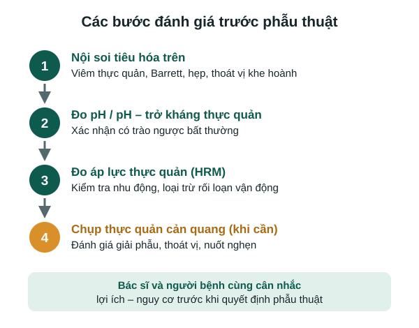
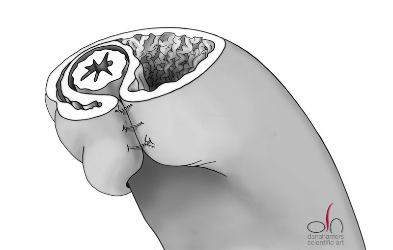
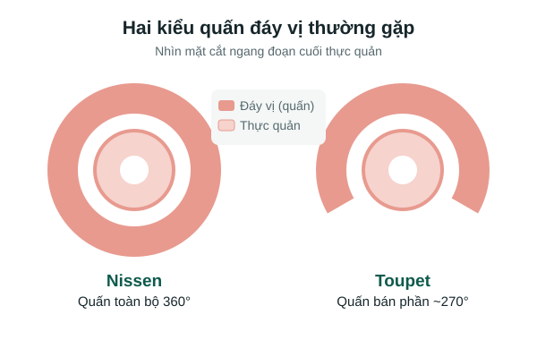

Tóm tắt nhanh
- Phẫu thuật chống trào ngược có vai trò ở một nhóm bệnh nhân được chọn lọc, không phải phương pháp điều trị thường quy cho mọi người bị GERD.
- Chìa khóa là xác nhận GERD khách quan, đánh giá nhu động thực quản, tối ưu điều trị nội khoa và cùng bác sĩ cân nhắc lợi ích – nguy cơ trước khi quyết định.
Phẫu thuật chống trào ngược có thể giúp kiểm soát GERD ở những người bệnh được lựa chọn phù hợp. Tuy nhiên, phẫu thuật không phải bước tiếp theo mặc định khi người bệnh còn ợ nóng dù đã uống thuốc. Trước can thiệp, cần chứng minh GERD bằng xét nghiệm khách quan, xác định cơ chế triệu chứng và đánh giá chức năng vận động thực quản.
Mục tiêu của bài viết là giúp người bệnh hiểu khi nào phẫu thuật được cân nhắc, các phương pháp thường gặp, lợi ích và nguy cơ cần trao đổi với bác sĩ.
1. Khi nào gọi là GERD kháng trị?
GERD kháng trị là tình trạng có bằng chứng khách quan xác nhận GERD nhưng triệu chứng vẫn dai dẳng sau khi đã tối ưu hóa điều trị nội khoa. Một định nghĩa thường dùng là triệu chứng còn tồn tại dù đã dùng PPI liều gấp đôi ít nhất 8 tuần, trên nền GERD được chứng minh.
Cần phân biệt GERD thật sự kháng trị với triệu chứng giống trào ngược do tăng cảm giác thực quản, ợ hơi trên dạ dày, hội chứng nhai lại, rối loạn vận động thực quản hoặc bệnh lý ngoài tiêu hóa. Phẫu thuật không giải quyết được tất cả các tình trạng này.
Đọc thêm: GERD kháng trị và cách bác sĩ đánh giá
2. Chỉ định cân nhắc phẫu thuật
Phẫu thuật chống trào ngược có thể được cân nhắc khi:
- GERD đã được chứng minh khách quan bằng nội soi hoặc thăm dò trào ngược phù hợp.
- Triệu chứng điển hình như ợ trớ/ợ nóng vẫn gây khó chịu dù đã tối ưu điều trị nội khoa.
- Người bệnh không dung nạp thuốc hoặc không muốn điều trị thuốc kéo dài sau khi đã được tư vấn đầy đủ.
- Có bất thường giải phẫu phù hợp, chẳng hạn thoát vị khe hoành lớn, cần được sửa chữa kết hợp.
- Người bệnh hiểu rõ lợi ích, giới hạn, nguy cơ và khả năng triệu chứng tái phát.
Không nên phẫu thuật chỉ dựa trên triệu chứng ho, khàn tiếng hoặc đau ngực khi chưa có bằng chứng GERD và chưa loại trừ nguyên nhân khác.
Đọc thêm: tối ưu điều trị bằng thuốc trước khi cân nhắc can thiệp
3. Đánh giá cần thiết trước phẫu thuật
Đánh giá trước mổ thường phối hợp nhiều phương pháp:

Nội soi tiêu hóa trên: đánh giá viêm thực quản, Barrett, hẹp, thoát vị khe hoành và loại trừ bệnh lý khác.
Đo pH hoặc pH – trở kháng thực quản: xác nhận trào ngược bất thường và/hoặc mối liên quan giữa triệu chứng với các đợt trào ngược. Nếu GERD chưa được chứng minh, thường cần đo khi ngừng PPI theo quy trình; nếu đã có GERD khách quan nhưng còn triệu chứng khi điều trị tối ưu, có thể đo khi đang dùng PPI.
Đo áp lực và nhu động thực quản độ phân giải cao (HRM): loại trừ co thắt tâm vị, mất nhu động hoặc rối loạn vận động nặng; đánh giá nhu động trước khi tạo van chống trào ngược.
Chụp thực quản cản quang: có thể được chỉ định khi cần đánh giá giải phẫu, thoát vị hoặc triệu chứng nuốt nghẹn.
Đánh giá toàn trạng, dinh dưỡng, bệnh đồng mắc, nguy cơ gây mê và mong đợi của người bệnh.
HRM đặc biệt quan trọng trước phẫu thuật vì rối loạn nhu động có thể ảnh hưởng lựa chọn kỹ thuật và nguy cơ nuốt khó sau mổ.
4. Các phương pháp phẫu thuật thường gặp
A. Nissen fundoplication (quấn đáy vị 360°)
Đây là phẫu thuật tạo van chống trào ngược bằng cách huy động đáy vị và quấn toàn bộ quanh đoạn cuối thực quản. Phẫu thuật thường được thực hiện qua nội soi ổ bụng, đồng thời có thể khâu phục hồi trụ hoành khi có thoát vị khe hoành. Mục tiêu là tăng cường hàng rào chống trào ngược.


B. Toupet fundoplication (quấn bán phần khoảng 270°)
Đáy vị được quấn bán phần phía sau thực quản. Kỹ thuật có thể được lựa chọn ở một số người bệnh, đặc biệt khi cân nhắc chức năng nhu động thực quản và nguy cơ nuốt khó. Lựa chọn giữa Nissen và Toupet cần dựa trên đánh giá chức năng, giải phẫu và kinh nghiệm phẫu thuật viên.
C. Các kỹ thuật quấn bán phần khác
Watson hoặc Dor là những biến thể quấn bán phần được áp dụng trong những hoàn cảnh chọn lọc. Không có một kỹ thuật duy nhất phù hợp cho tất cả bệnh nhân.
5. Can thiệp chống trào ngược qua nội soi
Một số phương pháp ít xâm lấn hơn đã được phát triển:
TIF (Transoral Incisionless Fundoplication): tạo nếp/van chống trào ngược qua đường miệng bằng thiết bị nội soi chuyên dụng, không cần đường rạch bụng. Chỉ phù hợp với nhóm bệnh nhân được lựa chọn theo tiêu chuẩn giải phẫu và chuyên môn.
ARMS (Anti-reflux mucosectomy): cắt niêm mạc có kiểm soát quanh vùng nối thực quản – dạ dày nhằm tạo xơ hóa và tăng cường hàng rào chống trào ngược.
Các kỹ thuật liên quan như ARMA hoặc RAP cũng được nghiên cứu/áp dụng ở một số trung tâm.
Các kỹ thuật nội soi không thay thế phẫu thuật ở mọi trường hợp. Bằng chứng về hiệu quả dài hạn và tính phù hợp ở từng nhóm bệnh nhân còn khác nhau; người bệnh cần trao đổi rõ về khả năng tái phát, phải dùng thuốc lại hoặc cần can thiệp bổ sung.
6. Lợi ích và nguy cơ
Lợi ích có thể gồm giảm ợ trớ, giảm ợ nóng, cải thiện chất lượng cuộc sống và giảm nhu cầu dùng thuốc ở một số người bệnh. Tuy nhiên, phẫu thuật không bảo đảm hết hoàn toàn mọi triệu chứng và không loại trừ khả năng phải dùng thuốc lại về sau.
Các nguy cơ cần trao đổi trước mổ:
- Nuốt khó, cảm giác thức ăn mắc lại, đặc biệt trong giai đoạn đầu sau mổ.
- Chướng bụng, khó ợ hơi hoặc khó nôn (gas-bloat syndrome).
- Tái phát trào ngược, tuột hoặc lỏng van, tái phát thoát vị khe hoành.
- Chảy máu, nhiễm trùng, tổn thương thực quản/dạ dày hoặc biến chứng gây mê.
- Nhu cầu nong thực quản, nội soi hoặc phẫu thuật sửa lại trong một số trường hợp.
Hướng dẫn Việt Nam 2025 trích dẫn dữ liệu nghiên cứu phẫu thuật chống trào ngược nội soi ổ bụng với biến chứng trong 30 ngày khoảng 4% ở một đoàn hệ lớn; con số này không phải nguy cơ cá nhân và có thể thay đổi theo bệnh nhân, kỹ thuật và trung tâm.
Đọc thêm: theo dõi Barrett thực quản sau khi điều trị trào ngược
7. Chuẩn bị và hồi phục sau phẫu thuật
Trước mổ, người bệnh cần hoàn tất các xét nghiệm và thăm dò được chỉ định, kiểm soát bệnh đồng mắc, rà soát thuốc đang dùng và tuân thủ hướng dẫn nhịn ăn. Sau mổ, chế độ ăn thường được chuyển dần từ lỏng sang mềm rồi đặc theo phác đồ của cơ sở điều trị. Người bệnh cần ăn chậm, nhai kỹ, chia nhỏ bữa và tránh nuốt miếng lớn trong giai đoạn hồi phục.
Cần liên hệ cơ sở y tế nếu sốt, đau tăng, nôn ói kéo dài, không uống được, khó nuốt tiến triển, khó thở hoặc có dấu hiệu xuất huyết. Lịch tái khám giúp đánh giá khả năng ăn uống, nuốt, kiểm soát trào ngược và phát hiện biến chứng.
8. Những câu hỏi nên trao đổi với phẫu thuật viên
GERD của tôi đã được chứng minh bằng xét nghiệm nào?
Triệu chứng còn lại có chắc do trào ngược không?
Kết quả HRM cho thấy nhu động thực quản ra sao?
Tôi phù hợp với Nissen, Toupet hay một lựa chọn khác? Vì sao?
Nguy cơ nuốt khó, chướng bụng và tái phát trong trường hợp của tôi là gì?
Sau mổ có thể cần dùng PPI hoặc can thiệp lại không?
Trung tâm có kinh nghiệm với kỹ thuật được đề xuất và có kế hoạch theo dõi dài hạn không?
Câu hỏi thường gặp
GERD kháng trị có phải mổ không?
Không phải tất cả. Chỉ cân nhắc phẫu thuật ở người bệnh phù hợp sau khi xác nhận GERD khách quan, đánh giá triệu chứng và chức năng thực quản.
Trước phẫu thuật chống trào ngược cần làm xét nghiệm gì?
Thường cần nội soi, đo pH hoặc pH – trở kháng thực quản và đo áp lực thực quản độ phân giải cao; một số trường hợp cần chụp thực quản cản quang.
Nissen và Toupet khác nhau thế nào?
Nissen tạo van quấn đáy vị 360°, còn Toupet là quấn bán phần khoảng 270°. Lựa chọn phụ thuộc giải phẫu, chức năng nhu động và đánh giá của ê-kíp điều trị.
Tài liệu tham khảo
Hội Khoa học Tiêu hóa Việt Nam. Hướng dẫn chẩn đoán và điều trị bệnh trào ngược dạ dày – thực quản. 2025; Khuyến cáo 7, 10, 17, 19 và phần can thiệp/phẫu thuật.
Katz PO, et al. ACG Clinical Guideline for the Diagnosis and Management of Gastroesophageal Reflux Disease. Am J Gastroenterol. 2022.
Gyawali CP, et al. Updates to the modern diagnosis of GERD: Lyon Consensus 2.0. Gut. 2024.
Slater BJ, et al. SAGES guidelines for the surgical treatment of gastroesophageal reflux disease. Surg Endosc. 2021.
Miễn trừ trách nhiệm: Bài viết cung cấp thông tin giáo dục sức khỏe, không thay thế khám, chẩn đoán hoặc chỉ định điều trị của bác sĩ. Không tự ý dùng, ngừng hay đổi liều thuốc. Khi có dấu hiệu nguy hiểm, gọi 115. Đọc đầy đủ.